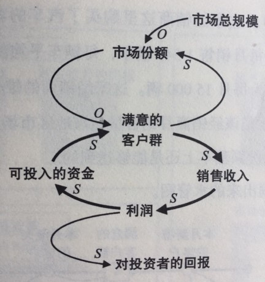
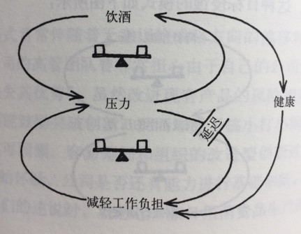
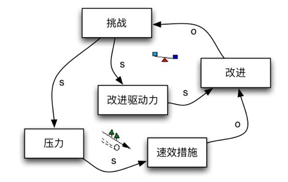
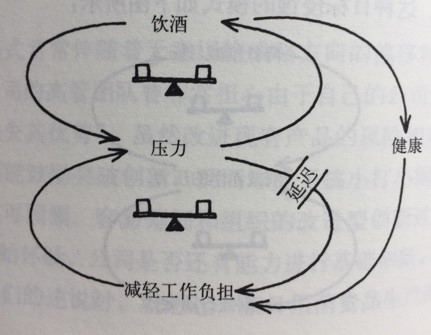
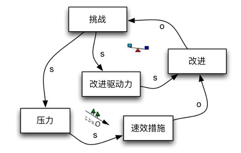

初识CLD
预计总时长: 40min
模块目标： 学员对CLD有初步了解和认识，知道CLD的基本概念（what）
演示实例CLD - 25min
目标：引出概念（变量、链路、回路、系统、系统边界）
形式：[讲师讲解，以采用说故事的方式解说]
- 解说示例用CLD：强制加班赶进度
分组读图 - 15min
目标：能够掌握阅读基本CLD图，识别其中的问题
形式：分组讨论，分享，讲师点评
- 每人单独阅读各自的CLD图 - 5min
- 组内分享&讨论，识别出问题 - 10min
附录
讲师讲解CLD
小组用CLD

 


